قاعة الفن المعاصر
استكشف أحدث الأعمال واللوحات الفنية الحديثة (انقر على أي لوحة لعرضها بالتفصيل)

أطياف اللون والضوء
فنان تشكيلي: أحمد العبيدي
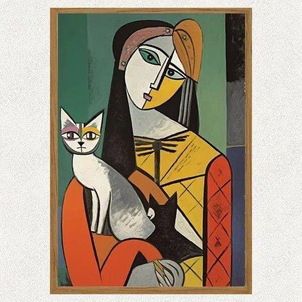
المدارس الفنية الحديثة
فنان تشكيلي: بابلو بيكاسو
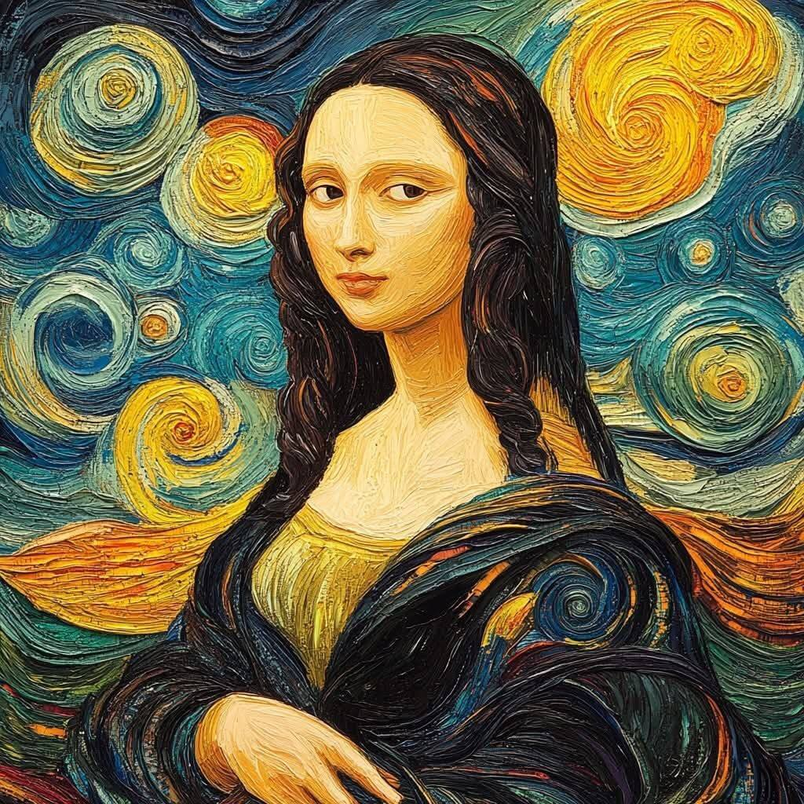
الموناليزا
فنانة تشكيلية: فينسنت فان جوخ
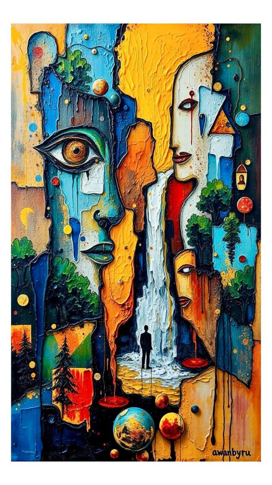
بأسلوب تجريدي وسريالي
فنان: --------
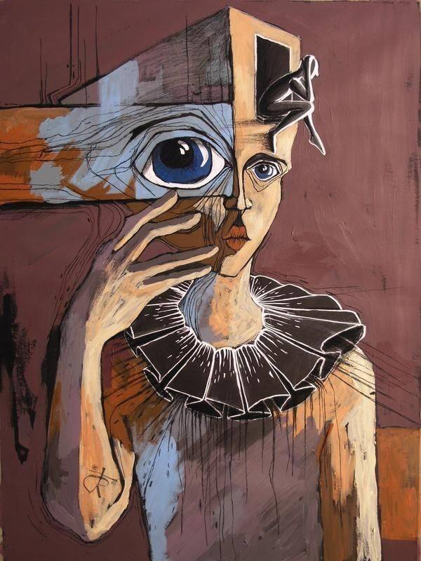
عين زرقاء
فنان: --------
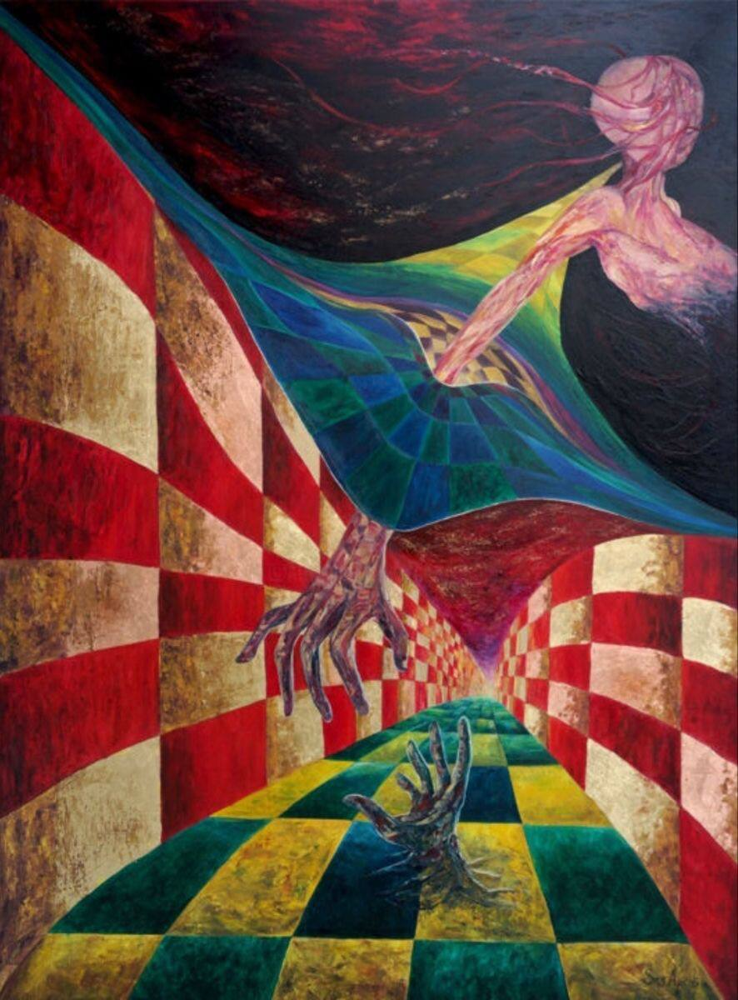
بأسلوب سريالي
فنان: --------
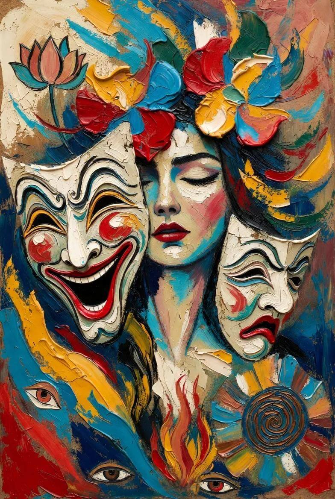
السكينة/Impasto
فنان: --------
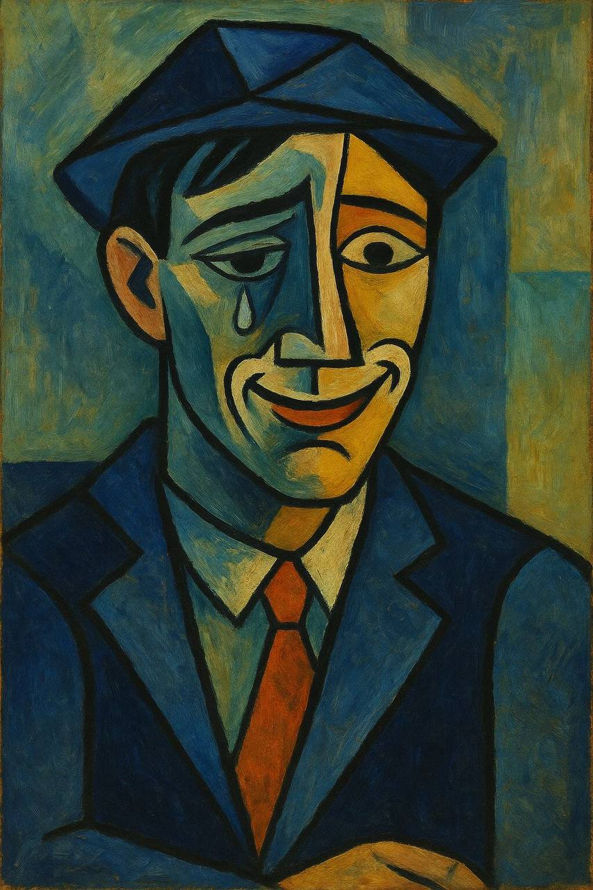
بأسلوب تكعيبي وتعبيري
فنان: --------
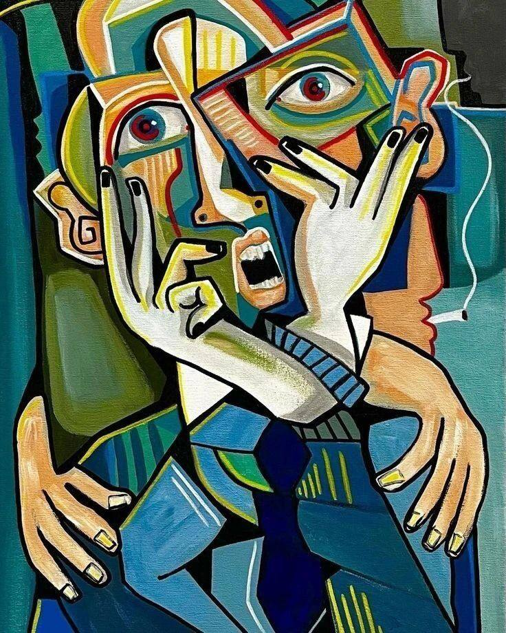
للوحة الفنية المعاصر
فنان: --------
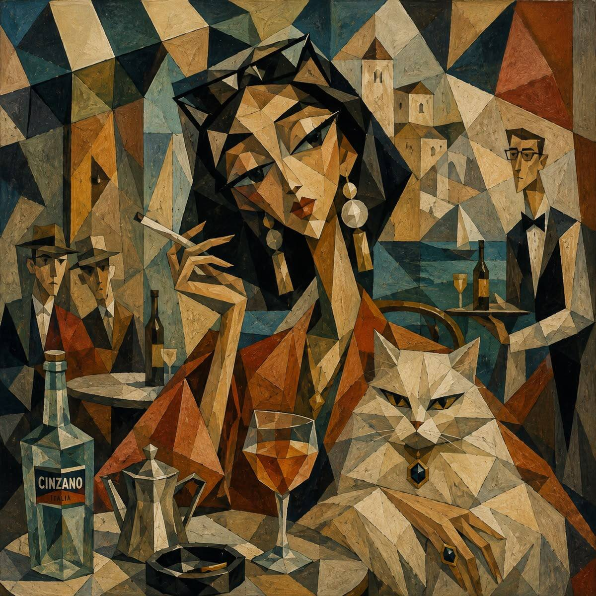
أسلوب تكعيبي وتحليلي متطور
فنان: --------
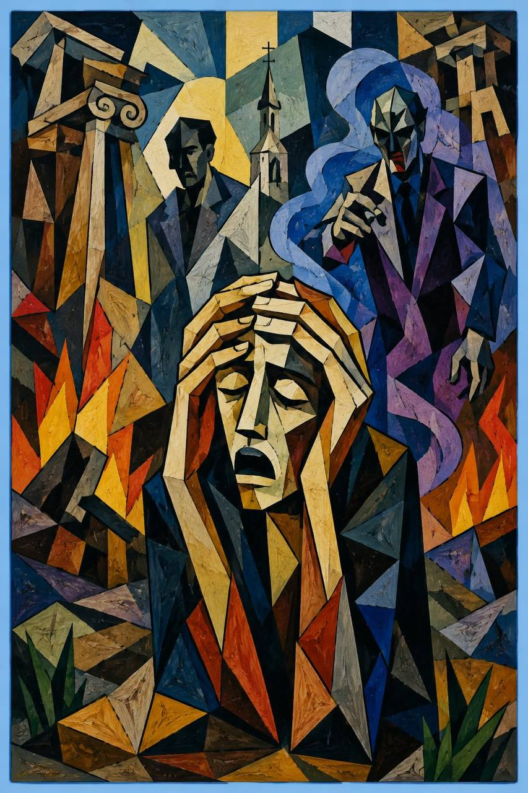
مشهداً درامياً دراماتيكياً
فنان: --------
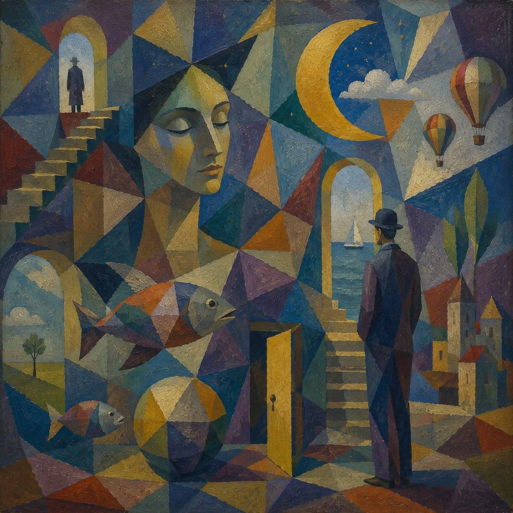
أسلوب تكعيبي وسريالي
فنان: --------